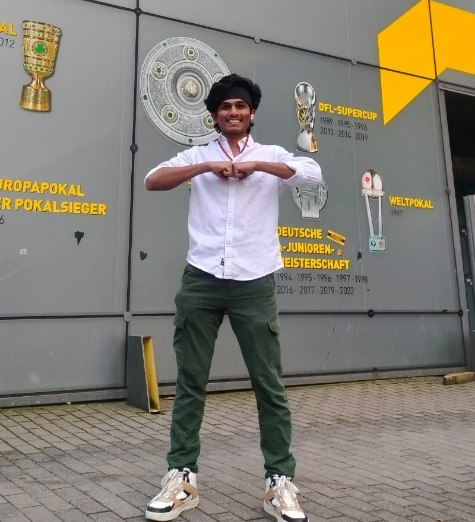

At ITC, University of Twente, where students from across the globe come together to pursue advanced studies in geo-information science and earth observation, adapting to a new academic and cultural environment can be both exciting and challenging. That’s where Orbit steps in not just as a student board, but as a bridge between individuals, cultures, and experiences. Founded with the belief that a sense of belonging is essential for academic and personal growth, Orbit is a student-led association committed to creating a supportive and inclusive space for all ITC students. We understand that true success goes beyond grades; it’s also about friendships formed, traditions shared, and memories created along the way. That’s why we organize everything from academic workshops and career talks to cultural festivals and social events each designed to connect, uplift, and empower. Orbit is more than a committee; it’s a community built by students, for students a place where every voice matters, and every journey is celebrated.
Orbit Events
Celebrating Love and Friendship
For our Valentine’s Day celebration, we embraced the spirit of love and friendship. From anonymous love notes to dinners with friends, and a festive party to top it all off. The love could be felt throughout the entire ITC faculty.
Spring in Keukenhof
To welcome the beauty of the season, we spent a blooming day at Keukenhof, surrounded by tulips, sunshine, and laughter. From peaceful strolls through flower-lined paths to joyful group photos, it was a perfect escape into nature.
International Food Festival
We traveled the world through the flavors of our community during the International Food Day, with delicious homemade dishes from eight different countries. It was a celebration of culture, connection, and the joy of sharing a meal together.
International Sports Day
Students and ITC staff came together for an active and cheerful afternoon, enjoying soccer, volleyball, and other games. It was a great chance to build team spirit, relax, and have fun outside the academic routine.
Picnic at Wooldrikspark
We gathered for a relaxing afternoon in the park, enjoying nature, games, and even meeting some furry friends. It was a joyful break and a beautiful way to connect with others in a calm environment.
Teacher of the Year
Congratulations to Lucas De Oto, our Teacher of the Year 2025! Orbit celebrates the educators who make a difference every day with passion and dedication.
Graduation 2025
A proud moment as we honored the graduating class of 2025. With smiles, speeches, and caps in the air, the ceremony marked a new beginning for our incredible ITC students.
Orbit Events Calendar
Membership Options
Orbit Organisation Membership
Becoming a member of Orbit opens the door to a vibrant, enriching student life at ITC. As a member, your voice is represented on important matters related to education and accommodation, ensuring your concerns are heard and addressed. But it’s not just about advocacy it’s also about experience. Members enjoy exclusive perks like:
Free access for the move-in market
Annual trip to Amsterdam
Free access to end of module parties with subsidized drinks at ITC lounge
Free indoor games: table tennis, chess, and pool (non-members €4/hour)
Free access to ITC hotel facilities such as a projector and sports equipment
Free movies and matches organized in the lounge
Free entrance to indoor ice skating and other fun activities
Sponsorship for ITC International Food Festival
Participation in the annual international sports competition and Batavierenrace
Annual trip to the breathtaking Keukenhof flower garden
Special rental/sale prices for bikes at the Fietsenslijterij shop
Hey everyone! I’m Smit, currently doing my MSc in Geo-Information Science and Earth Observation, specialising in Natural Resources Management. I’m into ecology, decolonization, and exploring new ways to approach environmental governance, basically trying to make sense of the planet and how we treat it. Outside of class, I’m the President of ORBIT and work on sustainability initiatives with GREENHUB (because saving the world is a team sport). At home, I am an avid chef and towards the night, a passionate cinephile! Feel free to reach out or have chat (or if you want to reward yourself with some amazing Indian or Italian cuisine recipes or critically acclaimed cinema recommendations 😉).
Nawwar Procheta Vice President
Hi! I’m Nawwar Fatima Procheta from Bangladesh, currently a Master’s student in Spatial Engineering at ITC. I’m passionate about climate change, disaster management, and using spatial data to solve real-world environmental challenges.I serve as the General Secretary of the current Orbit board, working to support student life and build a strong ITC community. Outside of my studies, I love cooking, baking, painting, and photography they’re my favorite ways to unwind and express myself. Always up for good food, exploring places and good conversations!
Jaheeruddeen Mogal Treasurer
Hey! I’m Jaheeruddeen Mogal, a Geoinformatics Master’s student at ITC and the treasurer of Orbit. I handle the finances for all our events making sure everything runs smoothly behind the scenes. From budgeting cultural nights to managing funds for fun meetups, I’ve got it covered.
Abdulqudus Residence Coordinator
I am Abdulqudus, also know as Abdul. I am dedicated to creating a comfortable and welcoming environment for all residents. My role involves overseeing the smooth operation of shared facilities, ensuring that everyone has access to the resources they need, and fostering a sense of community within the residence. I strive to maintain a cordial and supportive atmosphere where residents feel comfortable voicing concerns and sharing feedback. I take pride in being approachable and always ready to assist, ensuring that everyone feels heard and valued in their living space.
Danush Raghu Social Event Coordinator
Hey there! I’m Danush Raghu. I plan fun, inclusive events to help us all connect whether it’s academic hangouts, cultural nights, or casual meetups. Got ideas for events? Want to collaborate? Curious about geo-stuff? I’m your guy! Come say hi or drop me a message I’m always up for a good chat.

Avinash Reddy Sports Secretary
I'm Avinash Reddy, specializing in Natural Resources Management.I'm passionate about promoting fitness, teamwork, and a strong sporting spirit on campus. My goal is to make sports more inclusive, competitive, and enjoyable for all. Let's work together to build a vibrant and active community!
Sara Melgarejo Academic Affairs Coordinator
Hey! I’m Sara from Colombia. I'm here to help make your academic journey smoother and ensure your voice is heard. Whether you're tackling coursework or adjusting to life in a new country, you’re not alone. Let’s keep things supportive, fun, and a little less overwhelming together!
I'm Saurabh, focused on Urban Planning and Management. I help with communication and student engagement at Orbit. Let’s build a vibrant community together!